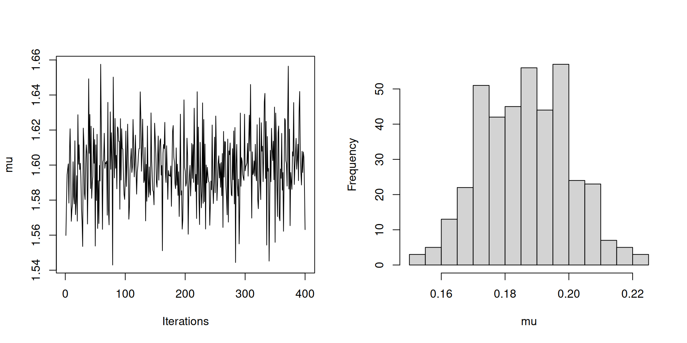

Inference for Stan model: 497cd0e1b76922c9b502954f0e5f2a17.
4 chains, each with iter=200; warmup=100; thin=1;
post-warmup draws per chain=100, total post-warmup draws=400.
mean se_mean sd 2.5% 25% 50% 75% 97.5% n_eff Rhat
mu 1.60 0.0 0.02 1.56 1.59 1.60 1.61 1.64 364 1.00
sigma 0.19 0.0 0.01 0.16 0.18 0.19 0.20 0.21 65 1.06
lp__ 116.22 0.1 1.03 113.37 115.77 116.54 116.95 117.28 113 1.02
Samples were drawn using NUTS(diag_e) at Thu Mar 23 15:02:32 2023.
For each parameter, n_eff is a crude measure of effective sample size,
and Rhat is the potential scale reduction factor on split chains (at
convergence, Rhat=1).Probabilistic Programming with STAN
Forrest Koch
Disclaimer
I am by no means an expert in Bayesian Inference. I would describe myself Bayesian “enthusiast” at best.
Aims
- To encourage you to consider Bayesian approaches for your analyses.
- To put STAN on your radar as a flexible and powerful tool for Bayesian inference.
- Give an overview of how STAN works.
- Provide some examples of how it can be used.
Overview
- Why Bayes?
- Why STAN?
- How does it work?
- Some Examples.
The Canonical Formula
Bayes Rule: \[ P(A|B) = \frac{P(B|A)P(A)}{P(B)} \]

In practice
\[\underbrace{P(\boldsymbol{\theta}|x)}_{\text{posterior}}\propto \overbrace{\mathcal{L}(x|\boldsymbol{\theta})}^{\text{Likelihood}}\underbrace{P(\boldsymbol{\theta})}_{\text{prior}}\]
- \(x\) is the observed data
- \(\boldsymbol{\theta}\) are the parameters of interest
- Note 1: \(P(x)\) is not tractable, but it is constant
- Note 2: A uniform prior results in \(P(\boldsymbol{\theta}|x)\propto \mathcal{L}(x|\boldsymbol{\theta})\)
Bayesian versus Frequentist
Frequentist: \[\hat{\boldsymbol{\theta}}_{\text{MLE}}=\underset{\boldsymbol{\theta}}{\text{argmax}} \;\mathcal{L}(x|\boldsymbol{\theta})\]
- The true parameter is treated as constant.
- Estimate aims to maximize the probability of observing data.
Bayesian versus Frequentist
Bayesian: \[\hat{\boldsymbol{\theta}}_{\text{MAP}}=\underset{\boldsymbol{\theta}}{\text{argmax}} \;P(\boldsymbol{\theta}|x)\]
- The true parameter is treated as random.
- The estimate is chosen as the posterior mode.
Benefits of Bayes over Frequentist
- The ability to incorporate prior knowledge
- More interpretable
- Credible intervals vs. confidence intervals
- Estimation of probability of hypotheses
- Resolves some of the limitations of p-values
- More flexible
- Hierarchical models are more straightforward
- Easier to take measurement uncertainty into account
- Non-standard hypothesis testing by probing the posterior
Drawbacks of the Bayes approach:
- Computationally complex & demanding
- Prior specification is very important
- Too strong of a prior can bias results
- Can affect tractability (remedied by conjugate priors)
- Not what people are used to seeing
STAN
- Probabilistic programming language (PPL) for facilitating Bayesian inference
- Has interfaces for R, Python, shell, MATLAB, Julia, and Stata
- Multithreaded and compiles down to C++
- Intuitive model specification
- e.g:
y[i] ~ normal(mu,sigma);
- e.g:
- Amazing reference and user’s guide
How it works: HMC and NUTS
- Hamiltonian Markov Chain (HMC) is an alternative to Metropolis-Hastings or Gibbs Sampling
- Allows for more efficient sampling of high-dimensional spaces
- Analogous to simulating a particle moving over the posterior density
- The No U-Turns Sampler (NUTS) provides an implementation of HMC which automatically adapts the number of leap-frog steps
Example Program Structure
Example Program Structure
Example Program Structure
Example Program Structure
Program Execution
Program Output

Another Example (ZIP)
Let’s try a slightly more complicated example. The zero-inflated Poisson (ZIP) is a mixture of the Poisson and Bernoulli distributions:
\[ P(x_n|\theta,\lambda) = \left\{ \begin{array}{ll} \theta + (1 - \theta) * \mathsf{Poisson}(0|\lambda) & \mbox{ if } x_n = 0, \mbox{ and} \\[3pt] (1-\theta) * \mathsf{Poisson}(x_n|\lambda) & \mbox{ if } x_n > 0. \end{array} \right. \]
ZIP Priors
We’ll impose the priors: \[ \theta\sim\beta(1,1)\\ s\sim\text{cauchy}(0,25) \\ \lambda\sim\Gamma(2,1/s) \]
ZIP Model
ZIP Model
ZIP Model
data {
}
parameters {
}
model {
scale ~ cauchy(0,25);
lambda ~ gamma(2, 1/scale);
theta ~ beta(1, 1);
for (n in 1:N) {
if (y[n] == 0)
target += log_sum_exp(bernoulli_lpmf(1 | theta),
bernoulli_lpmf(0 | theta)
+ poisson_lpmf(y[n] | lambda));
else
target += bernoulli_lpmf(0 | theta)
+ poisson_lpmf(y[n] | lambda);
}
}Program Execution
Program Execution
library(rstan)
library(shinystan)
options(mc.cores=16)
theta <- 0.25
lambda <- 10
n <- 100
y <- rbinom(n, 1, 1-theta)*rpois(n, lambda)
model <- stan_model(model_code=model.code)
fit <- sampling(model, list(N=n, y=y), iter=2000, chains=16)
# We can use Shiny too!
launch_shinystan(fit, host="0.0.0.0", port=4242)Program Execution
library(rstan)
library(shinystan)
options(mc.cores=16)
theta <- 0.25
lambda <- 10
n <- 100
y <- rbinom(n, 1, 1-theta)*rpois(n, lambda)
model <- stan_model(model_code=model.code)
fit <- sampling(model, list(N=n, y=y), iter=2000, chains=16)
# We can use Shiny too!
launch_shinystan(fit, host="0.0.0.0", port=4242)Which will serve an app on the host machine at the specified port.
Other STAN options
brms/rstanarm: Provide a STAN interface using “traditional” R formulasPyStan: for PythonStan.jl: for JuliaCmdStan: command line interface
Other PPLs
PyMC: Python-based – The new version 4 has a new, JAX-base back-end!JAGS(Just Another Gibbs Sampler): withrjagsandPyJAGSinterfaces.Pyro: Which is PyTorch based.Edward: Tensorflow’s offering.- and many, many more
Summary
- Bayesian inference is an appealing framework
- At the cost of significant computational complexity.
- STAN is a powerful PPL for Bayesian inference.
- STAN uses NUTS to perform HMC to achieve efficient exploration of high dimensional spaces.
- It is simple, intuitive, and has a mature environment.
Thanks!